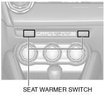

SEAT WARMER SWITCH
id091300101500
Purpose, Function
• The seat warmer switch can switch the seat warmer unit temperature in three stages.
Construction
• The seat warmer switch has an integrated indicator unit.

am2zzn00003116
Operation
• For the seat warmer switch operation, refer to the SEAT WARMER SYSTEM. (See
SEAT WARMER SYSTEM
.)
Fail-safe
• Not applicable